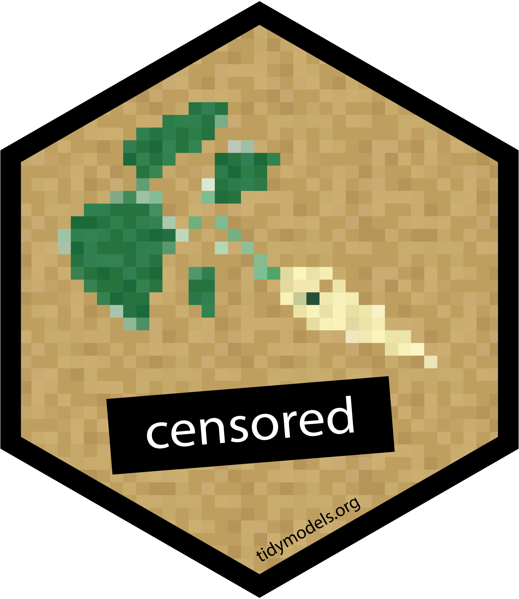

censored
A tidymodels package for survival models - Hannah Frick
Photo by Lavi Perchik on Unsplash
Photo by sami salim on Unsplash
Photo by Nikolay Loubet on Unsplash
For censored data,
i.e., data with two aspects
- “how long until?”
- “has it happened yet?”
use survival analysis
to take both aspects into account!
Photo by Waldemar Brandt on Unsplash
We’re extending support for
survival analysis in tidymodels

Consistency in
- how you specify and fit models
- how you predict and what you get back

Consistency in
- how you specify and fit survival models
- how you predict and what you get back

Specify and fit!
Photo by Linus Nylund on Unsplash
parsnip model specification
Additions for survival models
- New model type
proportional_hazards()
- New mode
"censored regression"
- New engines for
- Parametric models
- Semi-parametric models
- Tree-based models
- Formula interface for all models, including stratification
Cetaceans data
Adapted from Tidy Tuesday 2018-38:
cetaceans
#> # A tibble: 1,313 × 6
#> age event species sex transfers born_in_captivity
#> <dbl> <dbl> <fct> <fct> <int> <lgl>
#> 1 28 0 Bottlenose F 0 TRUE
#> 2 44 0 Bottlenose F 0 TRUE
#> 3 39 0 Bottlenose M 13 TRUE
#> 4 38 0 Bottlenose F 1 TRUE
#> 5 38 0 Bottlenose M 2 TRUE
#> 6 37 0 Bottlenose F 2 TRUE
#> 7 36 0 Bottlenose M 2 TRUE
#> 8 36 0 Bottlenose F 2 TRUE
#> 9 35 0 Bottlenose M 3 TRUE
#> 10 34 0 Bottlenose F 4 TRUE
#> # … with 1,303 more rowsPhoto by Ádám Berkecz on Unsplash
Proportional hazards model
Proportional hazards model
Proportional hazards model
Proportional hazards model
Proportional hazards model
Proportional hazards model
Switching to penalized model
Switching to penalized model
Switching via censored
Switching via censored
Switching via censored
More models, same syntax
Available in censored
All for the mode "censored regression".
| model | engine |
|---|---|
bag_tree() |
rpart |
boost_tree() |
mboost |
decision_tree() |
rpart |
decision_tree() |
partykit |
proportional_hazards() |
survival |
proportional_hazards() |
glmnet |
rand_forest() |
partykit |
survival_reg() |
survival |
survival_reg() |
flexsurv |
Predict!
Photo by Linus Nylund on Unsplash
tidymodels prediction guarantee
- The predictions are always inside a tibble.
- The column names and types are unsurprising and predictable.
- The number of rows in
new_dataand the output are the same.
Survival time
Survival probability
Survival probability
Survival probability
Approximation the survival curve
predict(
mod_mboost_censored,
new_data = cetaceans[2:3,],
type = "survival",
time = 1:80
) %>%
mutate(id = factor(2:3)) %>%
tidyr::unnest(cols = .pred)
#> # A tibble: 160 × 3
#> .time .pred_survival id
#> <int> <dbl> <fct>
#> 1 1 1 2
#> 2 2 0.981 2
#> 3 3 0.957 2
#> 4 4 0.932 2
#> 5 5 0.901 2
#> 6 6 0.869 2
#> 7 7 0.843 2
#> 8 8 0.802 2
#> 9 9 0.776 2
#> 10 10 0.752 2
#> # … with 150 more rowsApproximation the survival curve
Prediction types in censored
- For all models:
"time"and"survival" - Depending on the engine:
"hazard","quantile","linear_pred"